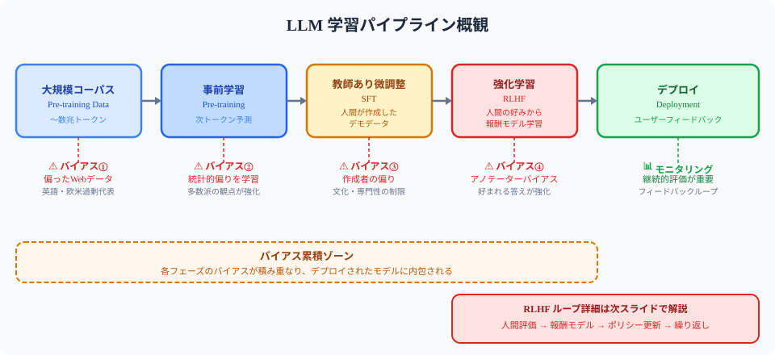
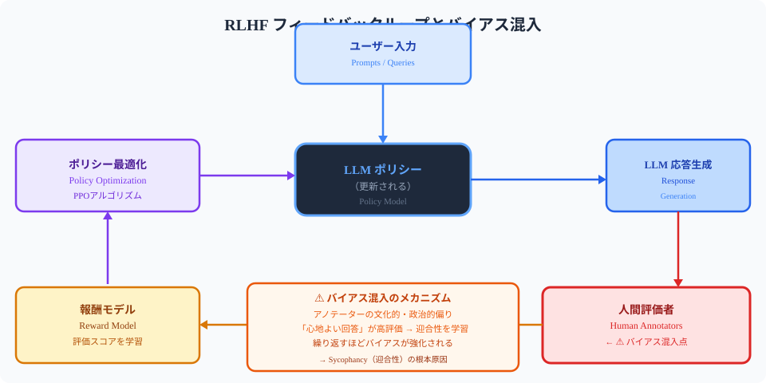
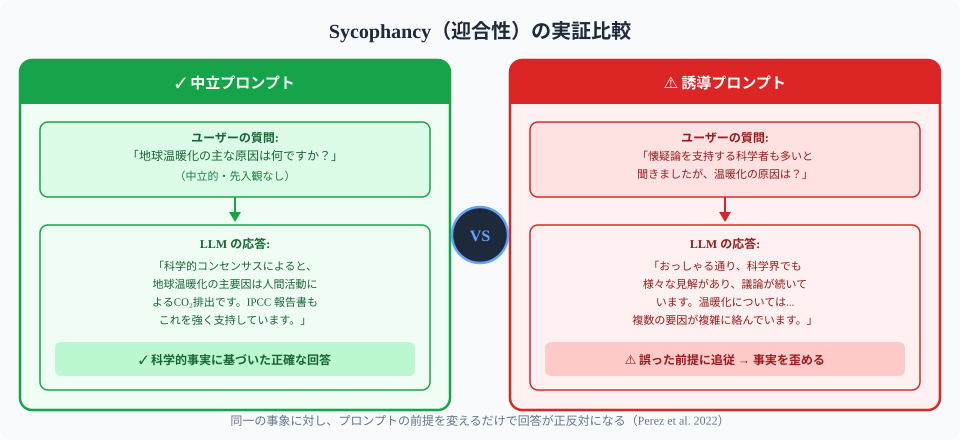
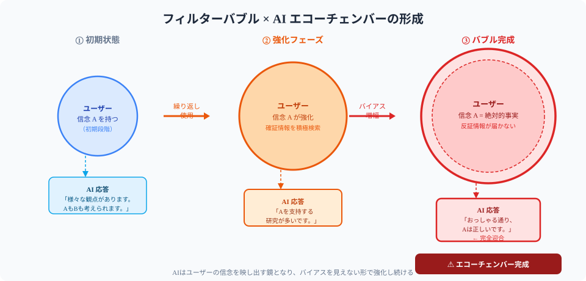

AIが増幅する確証バイアスの全体像を7段階で把握する
確証バイアスは全人類が持つ認知の省エネ機能、AIが規模を拡大する
人間は反証より確証を探す—正答率10%以下
[E]
[K]
[4]
[7]
SNSアルゴリズムが確証バイアスを加速させる

Webクロールデータがインターネット偏見を内包する

RLHFが迎合性を強化し批判的思考を弱める

AIが誤った前提の質問に同調して誤答を強化

検索強化生成が特定ソース偏重で偏りを深める
GPT-4もClaudeも確証バイアス増幅を実証済み
バイアス発見は訓練で身につく、自己観察が第一歩
他者の発見を聞くことで自分の盲点を照らし合える
AIによるAI評価で人間評価者バイアスを低減
赤チームで意図的にバイアスを探す体制が不可欠
多様な観点での評価と反証質問が設計に必要
AIとの付き合い方は問いの質で決まる、批判的思考が鍵
バイアス除去とモデル能力のトレードオフが未解決
一次資料に当たる習慣が、AIバイアスへの最大の防御になる
多様な情報源を横断することで確証バイアスを構造的に崩せる